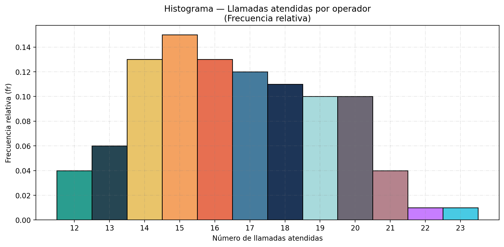
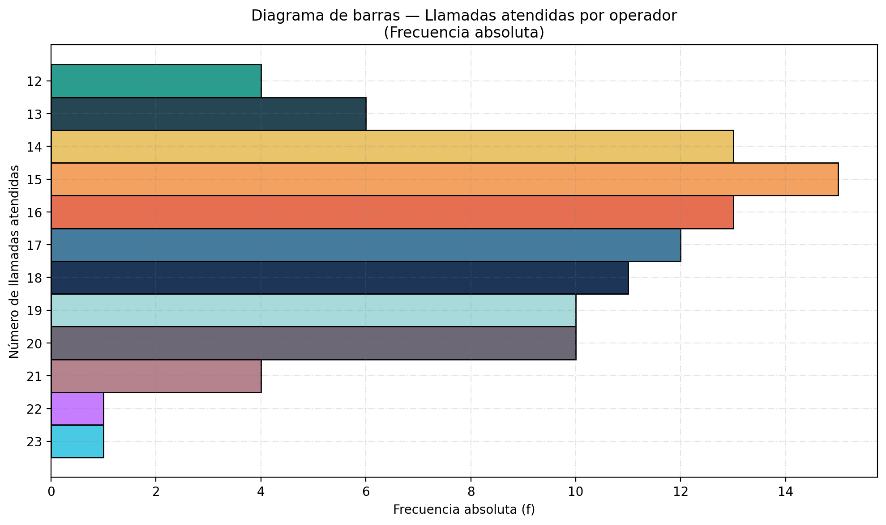
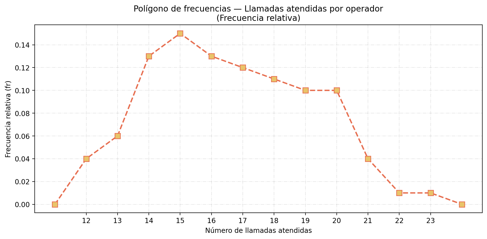
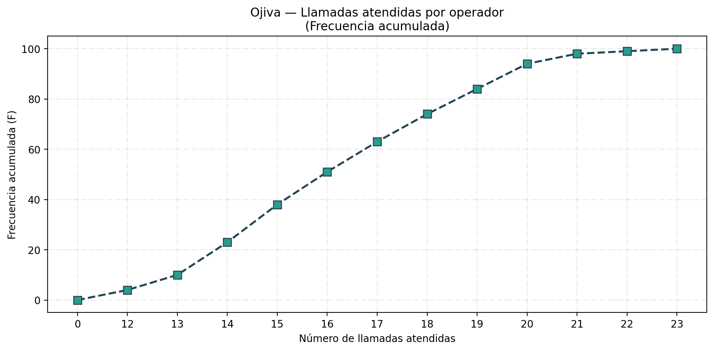
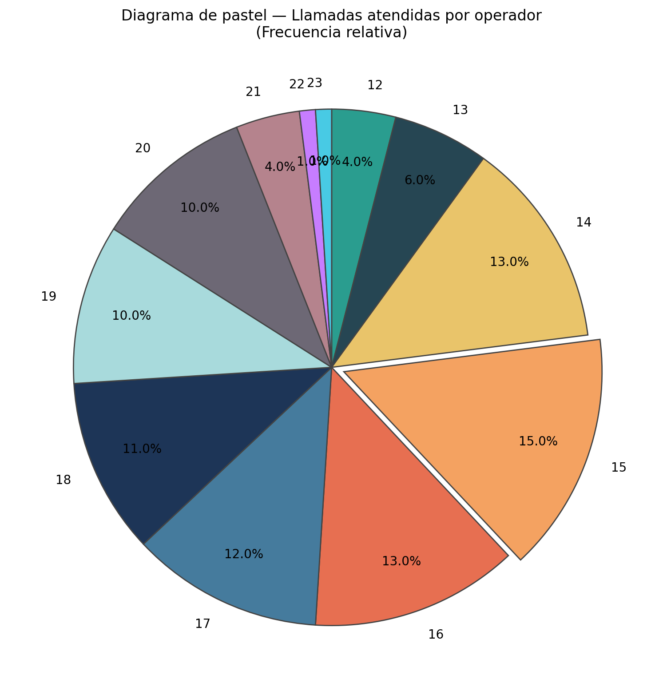

Contexto
En una empresa de telecomunicaciones se registró el número de llamadas atendidas por cada uno de sus 100 operadores durante un mismo día laboral de 8 horas. El objetivo es analizar la distribución de la productividad individual para detectar patrones, identificar a los operadores con bajo rendimiento y establecer metas realistas. Los datos son enteros no negativos, ya que no es posible atender una fracción de llamada.
Datos (n = 100 operadores)
Tabla de Frecuencia
| Clase (N.º llamadas) |
Frecuencia Absoluta (f) | Frecuencia Relativa (fr) | Frecuencia Acumulada (F) |
|---|---|---|---|
| 12 | 4 | 0.04 | 4 |
| 13 | 6 | 0.06 | 10 |
| 14 | 13 | 0.13 | 23 |
| 15 | 15 | 0.15 | 38 |
| 16 | 13 | 0.13 | 51 |
| 17 | 12 | 0.12 | 63 |
| 18 | 11 | 0.11 | 74 |
| 19 | 10 | 0.10 | 84 |
| 20 | 10 | 0.10 | 94 |
| 21 | 4 | 0.04 | 98 |
| 22 | 1 | 0.01 | 99 |
| 23 | 1 | 0.01 | 100 |
| Total | 100 | 1.00 | — |
* fr = f / n | F acumulada = suma de frecuencias absolutas hasta esa clase.
Galería de Gráficas

Histograma (fr)
Barras (f)
Polígono (fr)
Ojiva (F)
Pastel (fr)Contexto
En un laboratorio de seguridad vial se midió el tiempo de reacción de 100 conductores adultos ante una señal luminosa de frenado repentino, usando un simulador de conducción homologado. El tiempo de reacción es una variable continua expresada en milisegundos (ms). Tiempos menores indican mayor alerta; la distribución permite establecer rangos de riesgo para certificación de conductores profesionales. Los valores oscilan entre 180 ms y 420 ms.
Datos (n = 100 conductores, en ms)
Tabla de Frecuencia
| Clase | Límite Inferior | Límite Superior | Marca de Clase | Freq. Absoluta (f) | Freq. Relativa (fr) | Freq. Acumulada (F) |
|---|---|---|---|---|---|---|
| [180 – 208) | 180 | 208 | 194 | 10 | 0.10 | 10 |
| [208 – 236) | 208 | 236 | 222 | 14 | 0.14 | 24 |
| [236 – 264) | 236 | 264 | 250 | 18 | 0.18 | 42 |
| [264 – 292) | 264 | 292 | 278 | 22 | 0.22 | 64 |
| [292 – 320) | 292 | 320 | 306 | 18 | 0.18 | 82 |
| [320 – 348) | 320 | 348 | 334 | 12 | 0.12 | 94 |
| [348 – 376] | 348 | 376 | 362 | 6 | 0.06 | 100 |
| Total | — | — | — | 100 | 1.00 | — |
* Amplitud de clase = 28 ms | Marca de clase = (L.inf + L.sup) / 2 | fr = f / n